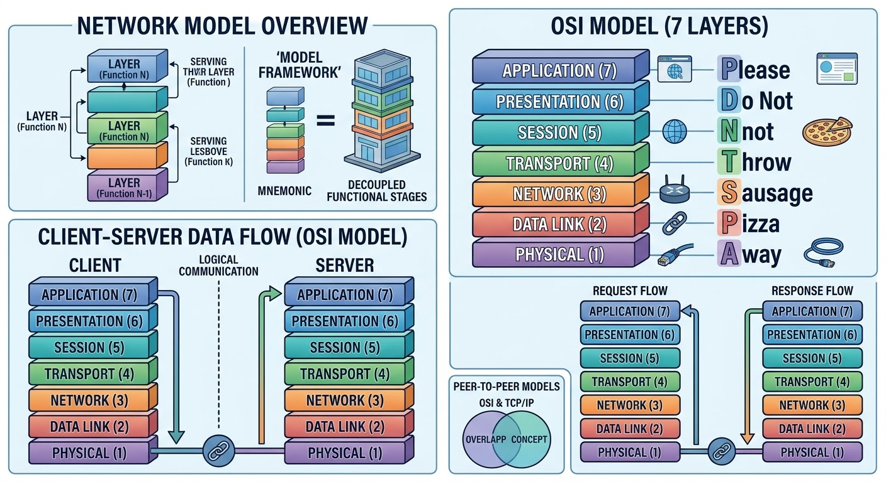
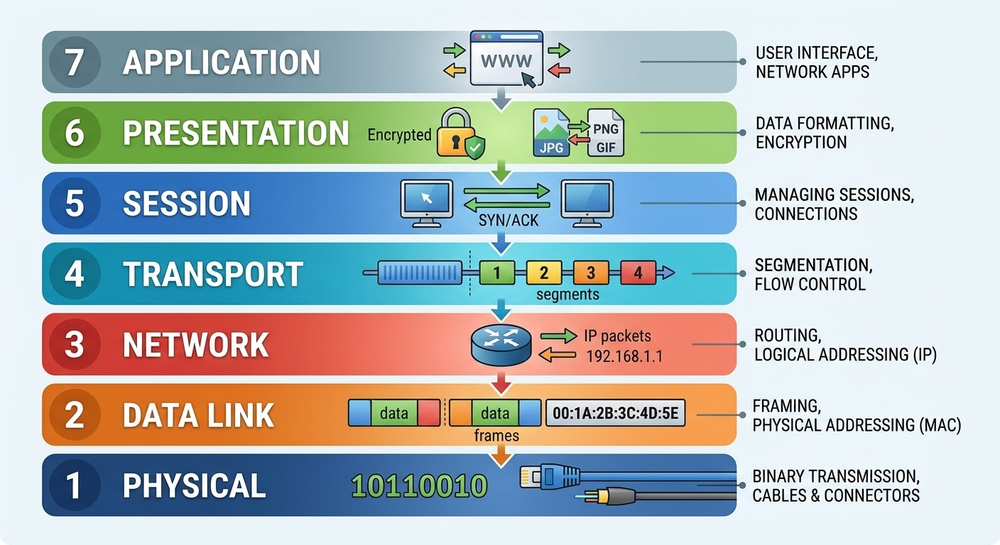

Computer Network Models.
Network Model is a framework dividing network communication into layers, each with its own job and rule.
And Layer is one stage in the model doing one job. It uses the layer below and serves the layer above.
In general there are two types of networking Models:
OSI(Open System Interconnection) and
TCP/IP(Transmission Control Protocol/Internet Protocol)
The famous OSI model.
This model has 7 layers: 1. Application, 2. Presentation,
3. Session, 4. Transport, 5. Network,
6. Data Link, and 7. Physical.
to remember this layers from layer one to seven easily use this example:
Please, Do, Not, Throw, Sausage, Pizza, Away.
How data flows through each of 7 layers of OSI model?
when the client makes request to the server, data will be generated at Application layer and the data will transfer keeping all layers order to Physical Layer.
then on server side the data will keep the all layers order starting from Physical to Application layer so our request will get it's destination.
when the Server responds the server data goes down from Application to Physical layer.
and then keeping all layers order, starting from Physical to Application layer so we will get the data what we requested for.
See Figure 01

Figure-01
Let's see the OSI model layer by layer.
7. Application: in non-technical terms it is simply user's application like Browsers.
But technically it refers to application protocols
e.g. HTTP, SMTP... which facilitate communication between our application and operating system.
6. Presentation: it provides variety of coding and conversion functions on Application data to ensure the information sent from application layer to be understood.
Main functions are: data conversion, data encryption and data compression.
And protocols are: MIDI, GIF, TIF, PNG, JPEG, ASCII . . . .
5. Session: it's main job is to establish, manage and terminate connections between the sender and the receiver.
It is very important because the data will not go anywhere without it.
4. Transport: it receive the data from Session layer and divide the data into smaller segments.
Then it adds information like: Destination port number, Source port number and the Sequence number that used by receiver to put segments back in order.
The main protocols are: TCP and UDP. you can understand what are they in PROTOCOL module in detail.
3. Network: its function is Logical addressing, Routing and Path determination.
In network layer IP addressing is called logical addressing. Network layer assigns sender and receiver IP address for every segments to form IP packet.
Routing is a method to move a data packet from source to destination.
Choosing the best possible path to delivery from source to destination is called path determination
2. Data Link: it receives data packet from Network layer. As logical addressing done in Network layer, Data link layer works on physical addressing which is about MAC addressing.
MAC address are assigned to each data packets to form a frame. the two basic tasks of Data Link layer is Access the Media (using the technique Framing) and Controlling how data is placed and received from the medial
(by using Media Access Control and Error Detection)
1. Physical: protocols at physical layer accepts frames from the data link layer and generates bits.
The basic goal of this layer is to build a physical connection between devices and transporting bits(1s,0s).
See Figure 02

Figure-02